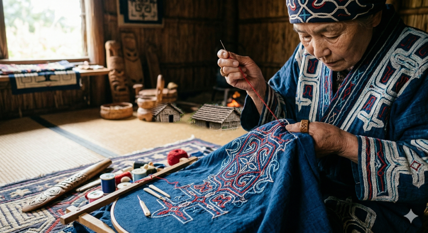

観光・体験一覧
多種多様な施設やアクティビティで、弥石町の魅力をたっぷりご堪能ください。
-

道の駅『サウレカムイ』
弥石の旬が揃う場所。特産の山菜や海産物を堪能できるほか、アイヌ工芸品も豊富に並びます。
-

弥石町アイヌ民族博物館
貴重な遺物から先人たちの知恵を紐解き、現代に息づくアイヌ文化と精神を深く体感できる施設。
-

アイヌ民族衣装着用体験
伝統の文様に守られる特別な瞬間を！美しい刺繍衣装を纏い、先人の精神に触れる体験。
-

ビセキコタン遺跡群
「弥石の村」という意味のビセキコタンは、復元されたチセが立ち並ぶ最も規模の大きな集落跡です。
-

アイヌ伝統文様刺繍体験
伝統のアイヌ文様を一針ずつ刻む。心の静寂と、先人たちの温もりに触れる刺繍体験。
-

民宿 ばづや
アイヌの民芸品に囲まれた温もりの宿。伝統の知恵が息づく空間で、心安らぐひとときを。
-

アイヌ料理体験
季節の旬で献立が変わる伝統料理体験。訪れるたび新しい「弥石の味」に出会えます。
-
弥石町移住支援説明会
理想の暮らしを弥石町で。住まいや仕事の相談、手厚い支援制度を詳しくご紹介します。
-

弥石町特産野菜収穫体験
雄大な大地が育んだ旬の野菜を自分の手で収穫！獲れたてならではの香りと甘みに感動してください。
-
くりかぼちゃスイーツ教室
弥石町特産の甘いくりかぼちゃを使用して、素材の味を活かした絶品スイーツ作りに挑戦します。
-

乳しぼり&チーズ作り体験
酪農の町で命の恵みを体感。新鮮な生乳から自分だけのチーズを作る、贅沢なひとときを！
-

山谷商店
伝統の刺繍衣装や工芸品が並ぶ老舗。弥石町の文化を暮らしに彩る逸品に出会える店。